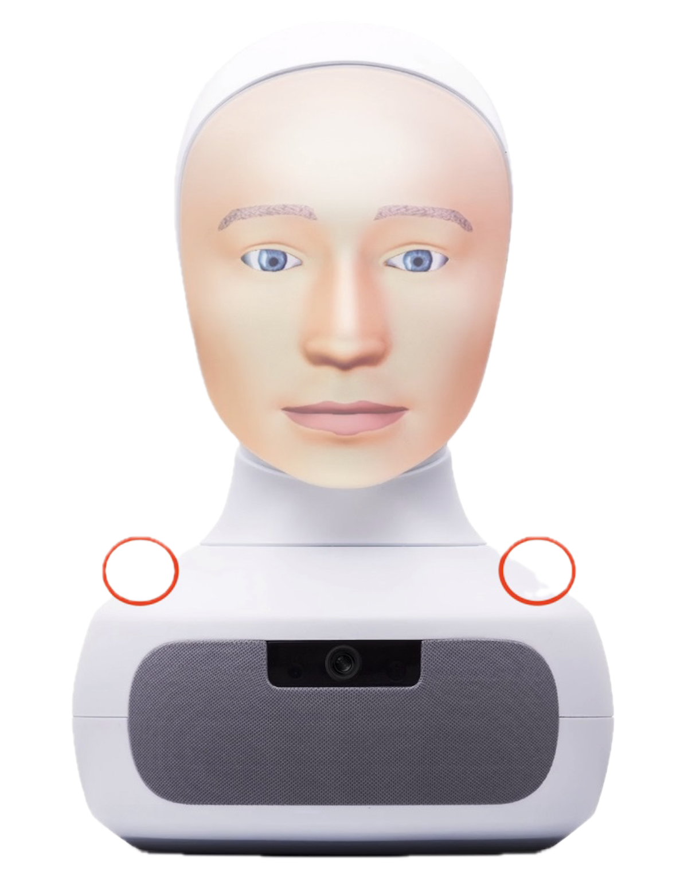
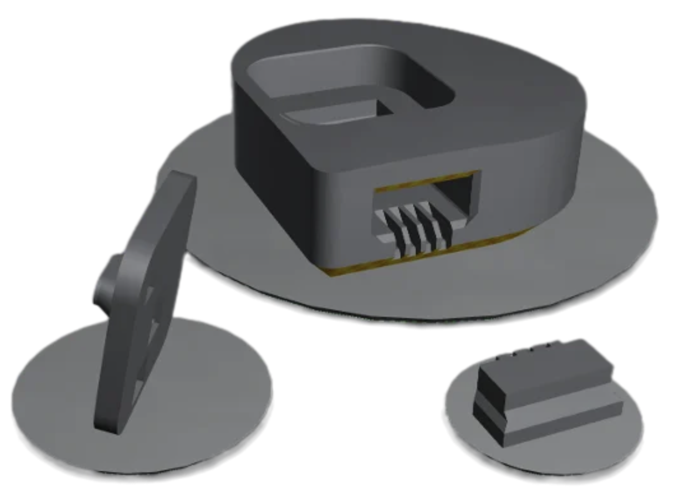

11/2025 – 03/2026 Bachelor’s thesis at Furhat Robotics and TH Köln
Furhat’s audio system
How mechanical microphone design can improve a social robot’s speech recognition.
01 / The problem
Speech recognition starts before the software.
A social robot depends on understanding people reliably, but recognition quality is influenced by more than the speech-recognition model itself. My bachelor’s thesis investigated how the mechanical implementation of Furhat’s MEMS microphones — including their mounting, isolation and acoustic channels — affects downstream automatic speech recognition.

02 / Mechanical redesign
Redesigning the path from sound to microphone.
I redesigned the microphone implementation in CAD and iterated through physical prototypes. The work focused on how the microphone was supported, mechanically isolated and connected acoustically to the robot’s exterior, allowing different implementations to be compared systematically.

03 / Experimental evaluation
Testing the redesign under controlled noise.
I built an automated evaluation setup to compare the microphone implementations across multiple signal-to-noise ratio conditions. Using word error rate as the final metric allowed the mechanical redesign to be evaluated by its effect on the complete recognition chain rather than by acoustic measurements alone.
background noise
implementation
recognition
04 / Result
A measurable improvement in recognition.
The redesigned implementation reduced mean word error rate by 9.3% compared with the original system. The improvement was statistically significant across all tested signal-to-noise ratio conditions.
Outcome
The thesis linked microphone mechanics directly to end-to-end ASR performance, combining CAD and rapid prototyping with automated speech-recognition testing and statistical analysis.